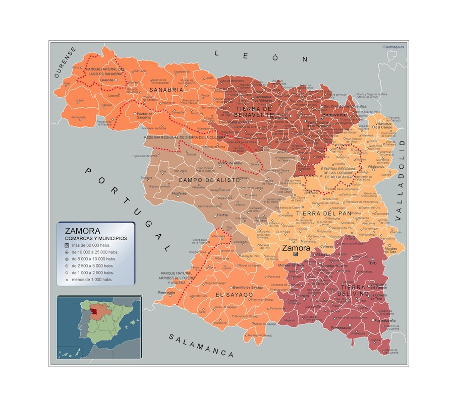
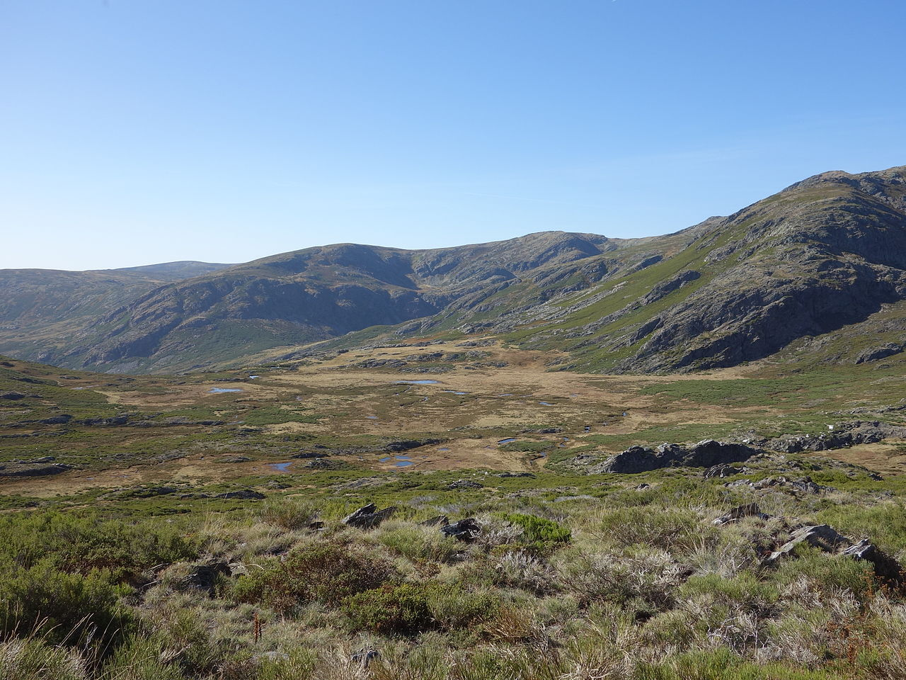
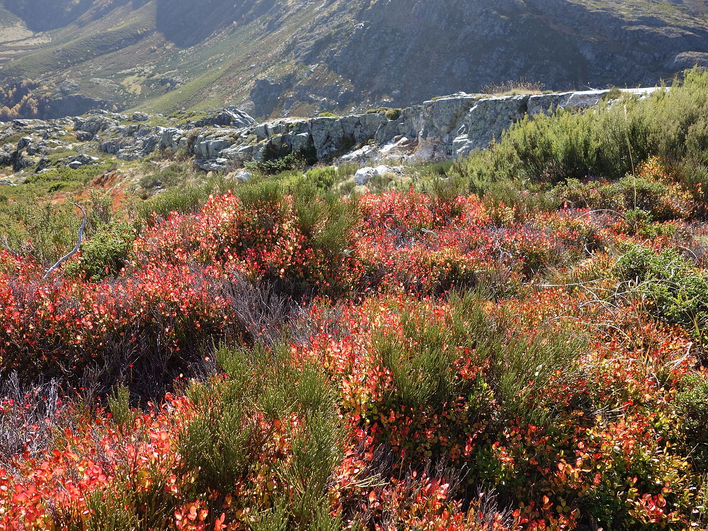
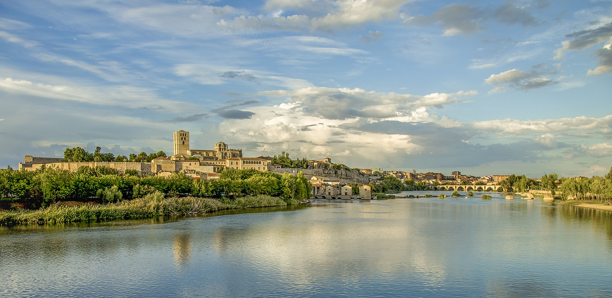
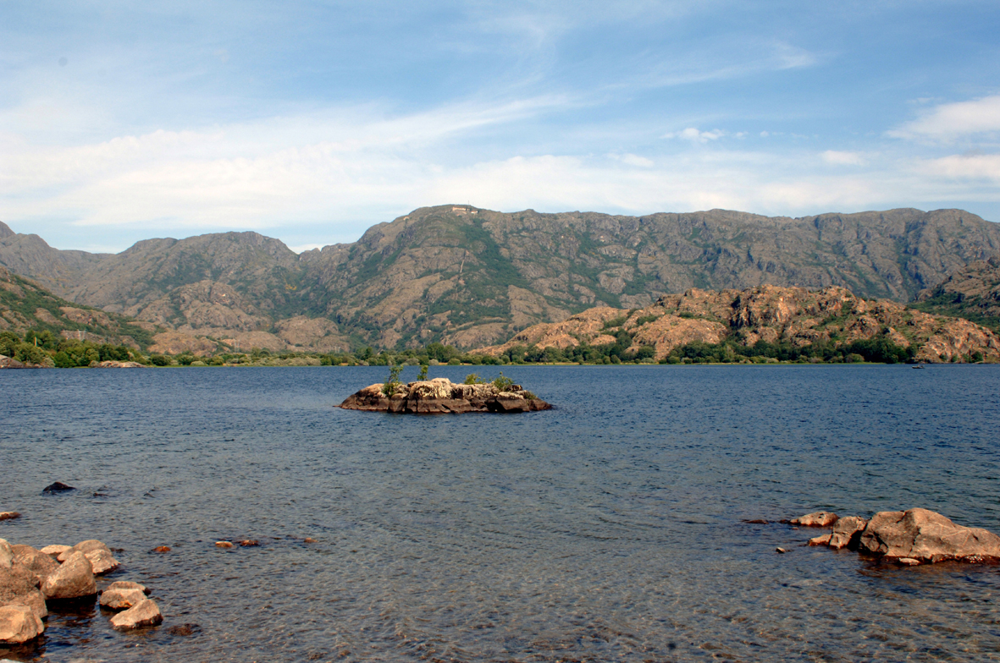
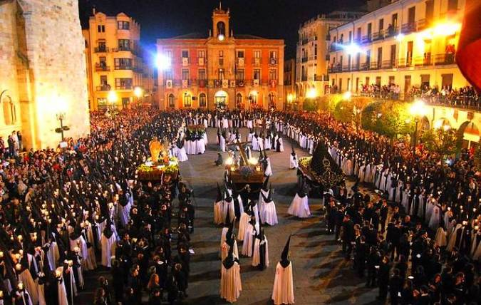
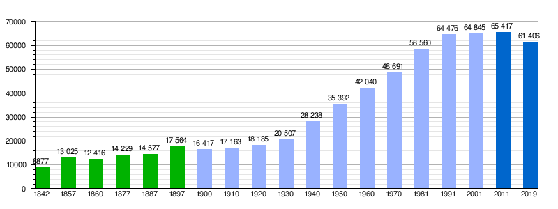

Ir a Salamanca
Ir a leon
Ir a Valladolid
Ir a Palencia
Ir a Burgos
Ir a Soria
Ir a Segovia
Ir a Ávila
LOCALIZACIÓN
La provincia de Zamora se localiza entre el centro y el noroeste de la península ibérica. Y si tenemos en cuenta solo la comunidad autonoma se localizaría en el este de Castilla y LeónVOLVER ARRIBA
LOCALIDADES PRINCIPALES
A cotinuación se muestra un mapa interactivo de la provincia de Zamora. Si clicamos en los nombres nos redirigira a la web oficial de cada zona 
VOLVER ARRIBA
GEOGRAFÍA
El término municipal de Zamora tiene una extensión de 149,28 km². Es la capital de provincia situada a menos altitud de la Meseta Norte y también es capital de la provincia homónima y pertenece a la Comunidad Autónoma de Castilla y León. Se ubica en el curso medio del río Duero, con una configuración longitudinal a lo largo del mismo, en la extensa región que forma la Meseta Norte, la parte de la Meseta Central situada al septentrión del sistema Central, en la zona noroeste de la península ibérica. Presenta un paisaje llano, y con escasa vegetación a causa de su clima mediterráneo con rasgos de continentalidad.
La parte oriental está sobre la vega del río y actúa como frontera con las comarcas de Tierra del Pan y Tierra del Vino, situadas al norte y al sur respectivamente. La parte occidental es por donde se separa del río hacia el norte y actúa de frontera con las comarcas de Tierra de Alba y de Sayago.
El núcleo principal del casco urbano —con una disposición muy alargada y en buena parte rodeado por murallas— se alza sobre una amplia meseta rocosa (la "peña tajada" de la que habla el Romancero Viejo) de 26 a 32 metros de altura, emplazada al borde del río Duero, que la ciñe por el sur, características que le valieron el sobrenombre de "la bien cercada". La altitud es de 652,6 m sobre el nivel del mar.
PICO MÁS ALTO
El pico mas alto de Zamora es Peña Trevinca. Se encuentra en el límite provincial de Zamora y Orense, con una altitud según el Instituto Geográfico Nacional de 2127m.  source:https://es.wikipedia.org/wiki/Peña_Trevinca#/media
_01.JPG){kind=link}
VOLVER ARRIBA
HISTORIA
Edad Antigua
La ciudad fue fundada a inicios de la Edad del Bronce, siendo posteriormente ocupada durante la Edad de Hierro por el pueblo celta de los vacceos, que la denominaron Ocalam. El asentamiento inicial se produjo en la almendra delimitada por el Castillo y la costanilla de San Ildefonso, un emplazamiento estratégico al tratarse de una meseta rocosa defendida por el río Duero, en la que se ubicó un castro.
El poblamiento se mantuvo durante el Imperio romano. De hecho, con frecuencia se la ha identificado con la importante mansio y civitas de "Ocelo Durii" (Ojo del Duero). Según algunos tal población correspondería en realidad con la actual Villalazán, doce kilómetros al este, también a orillas del Duero, y por la que transcurría la Vía de la Plata.
Según otros estudiosos, en cambio, sí que se asentaría en Zamora capital. A pesar de que hasta ahora no hayan aparecido en la ciudad restos arqueológicos de entidad correspondientes a este periodo (lo que no descarta posibles sorpresas futuras si se hicieran más excavaciones, como ocurrió recientemente con el destacado yacimiento de cerámica musulmana hallado en el solar en el que se ubica la sede del Consejo Consultivo de Castilla y León), la toponimia sería un argumento en favor de la capital zamorana, ya que "Okelo Duri" originalmente significaba peñasco prominente (las Peñas de Santa Marta) y por otra parte en la orilla opuesta del río se sitúa el barrio de San Frontis, nombre de origen romano, "sub frontis pontis", por debajo del puente. Precisamente a esa altura del cauce estuvo en pie hasta 1310 el Puente Viejo o de Olivares, del que aún existen algunos restos visibles. Además existe un mapa tardorromano en el que aparece el término "Okelo Duri" que se correspondería con Zamora. A esta época corresponde Viriato, el "terror romanorum", que celebraba sus victorias sobre los romanos (ocho en total) arrancando un jirón de sus rojos estandartes y poniéndolo en su lanza, lo cual es precisamente el origen de la bandera de la ciudad (y de la provincia), la "Seña Bermeja". Se le considera nacido en Torrefrades, pueblo de la comarca de Sayago o en la provincia de Huelva cuando aun se pensaba que el territorio de los lusitanos tenía otras fronteras y no estaba bien conocido, por lo que otros sitúan su origen en Portugal mismo hacia el Monte Herminius, en la sierra de la Estrella.
Edad Media
Durante la Edad Media, Zamora volvió a ser tomada y destruida por los musulmanes al mando del emir Mohamed y después reconquistada por los cristianos en el reinado del rey Alfonso II de Asturias, el Casto, siendo de nuevo fortificada. El rey Alfonso III de Asturias, el Magno la repobló con mozárabes toledanos en 893, rodeándola de murallas y dotándola incluso de palacios y baños, convirtiéndose, por su emplazamiento y características, en la ciudad fortaleza más importante de los reinos cristianos. La repoblación de la ciudad de Zamora fue descrita por Isa ibn Ahmad al-Razi de la siguiente forma: "dirigiose Alfonso hijo de Ordoño, rey de Galicia, a la ciudad de Zamora, la despoblada, y la construyó y la urbanizó, y la fortificó y pobló con cristianos, y restauró todos sus contornos. Sus constructores eran gente de Toledo, y sus defensas fueron erigidas a costa de un hombre agemí de entre ellos. Así, pues, desde aquel momento comenzó a florecer la ciudad, y sus poblados se fueron uniendo unos a otros, y las gentes de la frontera feron a tomar sitio en ella".
El periodo comprendido entre los siglos x y xiii es el de mayor relevancia de Zamora dentro del contexto hispánico. La batalla de Simancas (939) dio a Ramiro II de León el control de los valles del Duero y del Tormes, convirtiéndose la capital zamorana (por su posición y su ventajoso emplazamiento, en lo alto de una meseta rocosa al borde del río) en una de las principales plazas fuertes que aseguraban la frontera. Su importancia fue decayendo sin embargo a partir de la batalla de las Navas de Tolosa (1212), que abrió el sur peninsular a los reinos cristianos, perdiendo con ello Zamora su trascendencia estratégica.
Edad Contemporanea
A lo largo del siglo xviii la ciudad vivió una fuerte recuperación, que se vio favorecida por la protección de que gozó por parte de la Corona, proceso que se vio interrumpido abruptamente por la invasión napoleónica. A comienzos de 1809, durante la Guerra de la Independencia, Zamora se levantó en armas frente a las tropas francesas de Lapisse, Maupetit y Soulignac. Los zamoranos salieron a su encuentro al puente de Villagodio, sobre el río Valderaduey, a tres kilómetros la ciudad, donde trabaron con los franceses una sangrienta y desigual pelea que duró tanto como la luz del día; viéndose al fin en la necesidad de retirarse cerca del anochecer ante su situación de inferioridad manifiesta, tras contar con la pérdida de ciento treinta zamoranos muertos y doble número de heridos, no sin antes haber causado bastantes bajas en las filas enemigas. La temeraria hazaña es recordada mediante un obelisco conmemorativo, en el que figura la siguiente leyenda: “Los zamoranos de 1908 dedican esta inscripción a los héroes del 6 de enero de 1809. Este monumento fue erigido en 1819”. La ocupación duró tres años, hasta 1812, y provocó además graves pérdidas al patrimonio artístico de la ciudad.
A continuación un link de youtube que tratan la historia de Zamora explicada con mas detenimiento;
https://www.youtube.com/watch?v=7vLNOwsn9T0
VOLVER ARRIBA
CULTURA
Museos
La provincia de Zamora cuenta con los siguientes museos:- Museo de Zamora: Consta de una sección dedicada a la arqueología, otra a las bellas artes y una tercera dedicada a la historia de la ciudad.
- Museo Catedralicio de Zamora: Ubicado en la catedral, en él destaca su colección de tapices de los siglos xv y xvi
- Museo Etnográfico de Castilla y León: Es un museo dependiente de la Junta de Castilla y León, formando parte de la Red de Museos Regionales.
- Museo de Semana Santa de Zamora: Fue creado en 1957 por la Junta Pro-Semana Santa con el fin de mostrar y proteger los grupos escultóricos de las procesiones, abriendo sus puertas al público por primera vez en 1964.
- Museo Baltasar Lobo: Muestra varias decenas de obras del escultor de Cerecinos de Campos Baltasar Lobo
- Centro Museo Pedagógico de la Universidad de Salamanca (Cemupe): Inaugurado en 2011 recrea cómo eran las aulas durante la Segunda República y el franquismo.
- Museo Diocesano de Zamora: Inaugurado en julio de 2012, tiene su sede en la iglesia de Santo Tomé.
Gastronmia
Zamora cuenta con nueve productos con Indicación Geográfica Protegida. De la calidad de los alimentos zamoranos puede dar buena muestra el hecho de que varias de las materias primas utilizadas en el famoso restaurante "El Bulli" procedan de la tierra. Las especialidades gastronómicas más relevantes son las siguientes:- Queso zamorano, con denominación de origen y numerosos premios y galardones.
- Vino de Toro, con denominación de origen y numerosos premios y galardones. En la actualidad se contabilizan 45 bodegas en la Denominación de Origen
- Vino de la denominación de origen Tierra del Vino
- Vino de los Arribes, también con denominación de origen.
- Vino de Calidad de los Valles de Benavente.
- Garbanzo de Fuentesaúco
- Pimiento Fresno-Benavente
- Cañas Zamoranas, de excelente paladar, rellenas de crema suave y delicada.
- Ternera de Aliste, con Marca de garantía (1999).
- Chorizo Zamorano, con Marca de garantía (2005), el único chorizo de España con certificación específica aparte de la Indicación Geográfica Chorizo de Cantimpalos
- Arroz a la zamorana. Uno de los más populares de España, fuera de los levantinos. Su origen está en Alcañices, en la comarca de Aliste. Es un arroz de cerdo con un alto aporte calórico, pensado para combatir el frío de aquellas tierras
- -Vinos Zamoranos-
VOLVER ARRIBA
NATURALEZA
Fauna y Flora
La situación geográfica de Zamora da lugar a una naturaleza perfecta llena de contrastes con una gran variedad de paisajes gracias a la diversidad de los territorios que conforman sus comarcas, ninguna de las cuales se parecen entre sí, aunque unas complementan a las otras.
Las características dispares de sus espacios naturales, algunos de ellos aún desconocidos, hacen de la provincia de Zamora un referente en el patrimonio natural y un lugar perfecto para experimentar nuevas sensaciones.
En el Oeste destacan Sayago, Aliste y Sanabria y en frente en la otra mitad Este de la provincia, Benavente y los Valles, la Tierra de Campos y del Pan y el Duero Bajo, que integran las comarcas de Toro, Guareña y Tierra del Vino.
source:https://www.turismoenzamora.es/naturaleza/
En el siguiente video podemos hechar un vistazo rápido a todas las zonas más significativas y turisticas de Zamora.
source:https://www.turismoenzamora.es/naturaleza/

VOLVER ARRIBA
TRADICIONES
La Semana Santa zamorana está declarada de Interés Turístico Internacional desde el año 1986. Destaca por su sobriedad y disciplina, además de por el valor artístico y la antigüedad de varias de sus tallas, como el Cristo del Santísimo Espíritu Santo, que data del siglo xv. La Pasión zamorana cuenta también con grupos de Mariano Benlliure, Enrique Pérez Comendador, Quintín de la Torre o Hipólito Pérez Calvo, destacando por encima del resto la producción imaginera del zamorano Ramón Álvarez. Su duración es de algo más de una semana ya que comienza el Viernes de Dolores (el anterior al Domingo de Ramos) y culmina el Domingo de Resurrección.
Cuenta con cofradías de notable antigüedad, varias veces centenarias. La Santa Vera Cruz es la más antigua de la provincia. El documento más antiguo que se conserva de ella es de 1508, aunque se tiene conocimiento de su existencia ya en siglos anteriores. Las cofradías de la Santísima Resurrección, Nuestra Madre de las Angustias y la Cofradía del Santo Entierro datan del siglo xvi. En el siglo xvii se funda la Cofradía de Jesús Nazareno, vulgo Congregación.

source: foto recogida de gooogle.imagenes
Tampoco nos olvidemos de las mascaradas de invierno, las águedas por las candelas, los encierros y las tradiciones taurinas así como otras múltiples romerías y festividades completan la oferta cultural de la zona.

source: foto recogida de gooogle.imagenes
VOLVER ARRIBA
-OTROS ASPECTOS-
Demografía en Zamora
La ciudad de Zamora contaba en 2009 con 66 293 habitantes, de los cuales el 47,34 % son varones y el 52,66 % mujeres. La diferencia a favor de las mujeres se inicia en el grupo de edad comprendida entre los 35 y 39 años, incrementándose de forma sensible este distanciamiento a partir de los 65 años, según muestra la pirámide de población.

source: https://es.wikipedia.org/wiki/Zamora
VOLVER ARRIBA